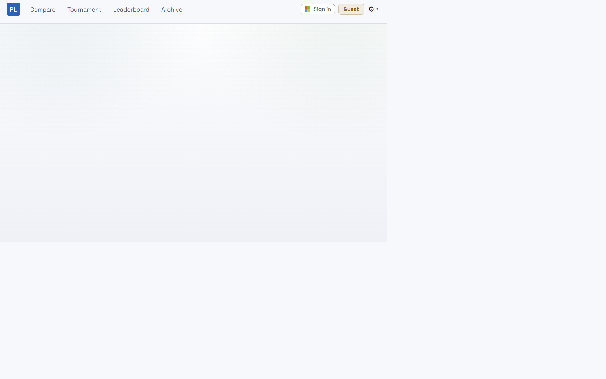
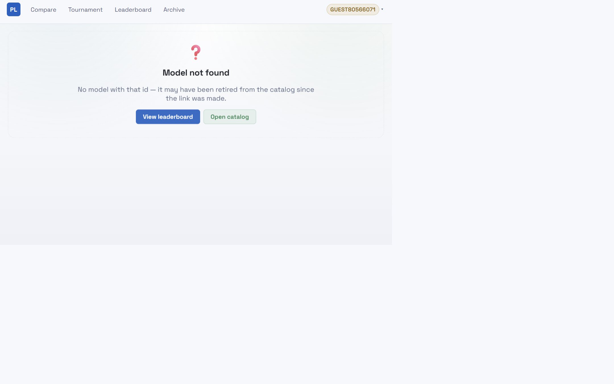
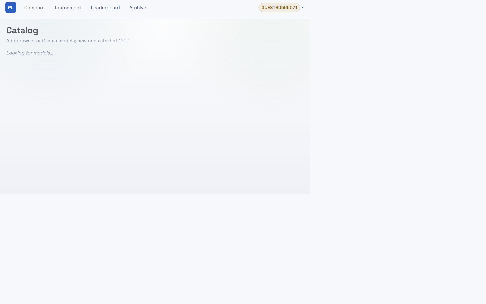
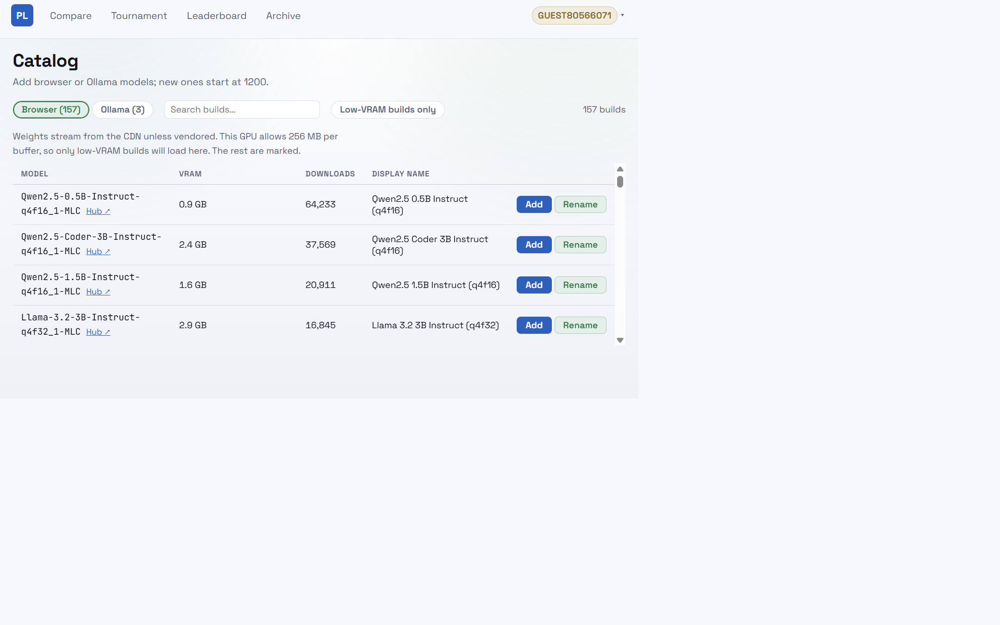
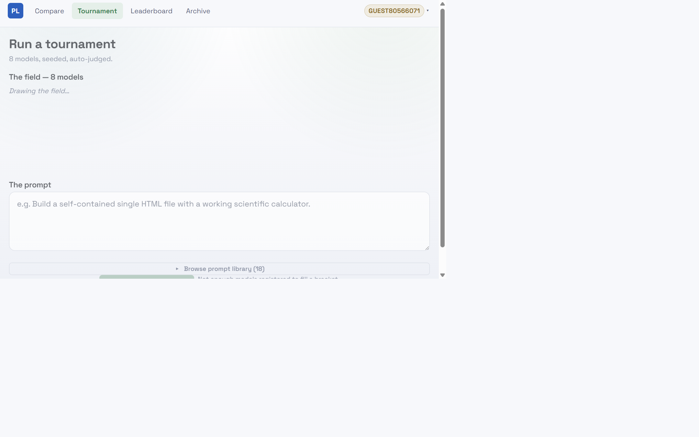
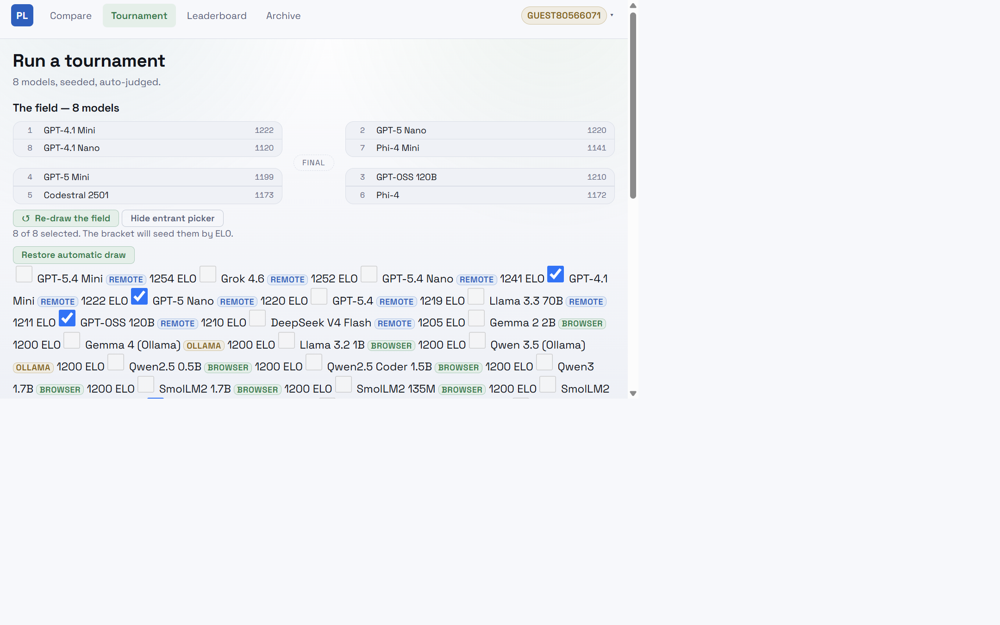
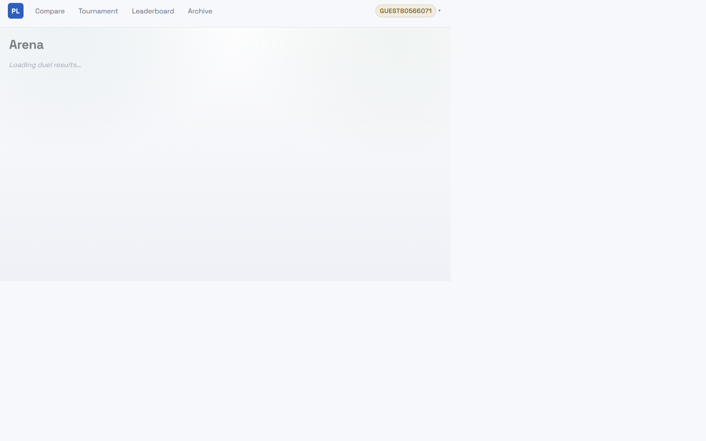
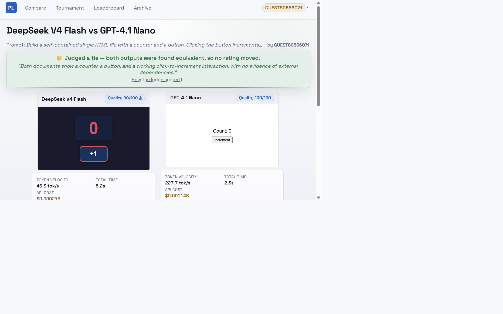
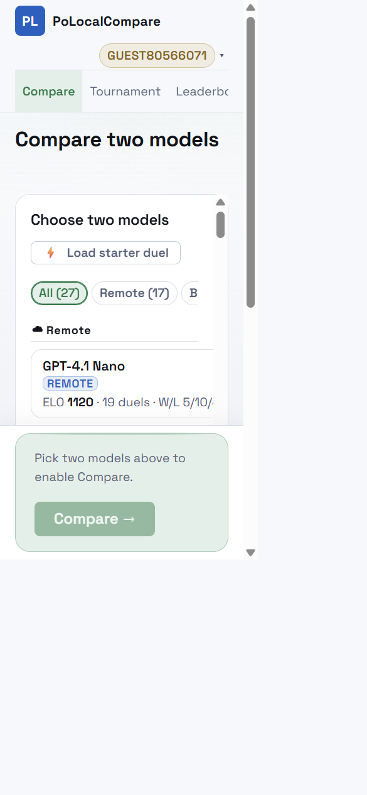
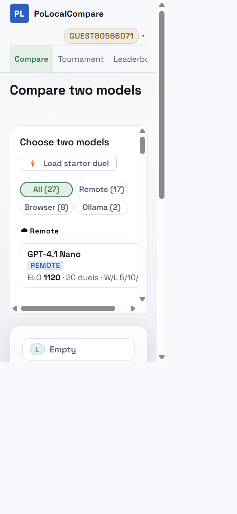

PoLocalCompare review fixes
Annotated before/after evidence for the UI changes completed on 2026-10-13.
Retired model recovery
Before: dead end

The explanation offered no route back into the product.
After: two recovery paths

Leaderboard and Catalog are now one action away.
Device-compatible catalog registration
Before: Add stayed active

Models marked as incompatible could still be registered.
After: incompatible Add disabled

The rows remain discoverable, but this device cannot register models it cannot run.
Optional tournament entrants
Before: automatic field only

The generated eight-model field could only be redrawn.
After: exactly-eight picker

Automatic drawing remains the default, with an optional accessible entrant picker.
Arena source inspection
Before: popup action

Source depended on a new-tab popup surviving browser policy.
After: inline disclosure

Raw model output is encoded and inspected in place, without a popup or app-origin blob.
Mobile Compare filters
Before: final filter clipped

The single horizontal row hid part of the Browser/Ollama choices.
After: all filters visible

A two-by-two grid exposes all four filters with no horizontal scrolling.